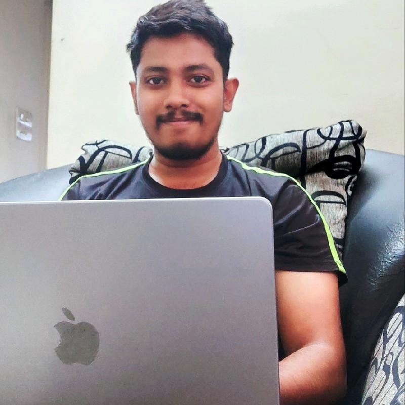

DIPANSHU RAI Profile
Cloud Engineer, T-Systems ICT India Pvt Ltd.
Contact: +918109070017
Email: dipanshurai.11@gmail.com
City: Pune, Maharashtra


|  |
DIPANSHU RAI ProfileCloud Engineer, T-Systems ICT India Pvt Ltd. Contact: +918109070017
Email: dipanshurai.11@gmail.com
City: Pune, Maharashtra |
|
|
I am a software engineer in Pune, India. I have completed my Bachelors of Engineering (B.E) from Rajiv Gandhi Proudyogiki Vishwavidyalaya, Bhopal.
I have been working for 8+ years now in IT industry and have gained extensive experience over this period of time by working in in various cloud platforms and DevOps projects.
My interests include cloud computing and designing websites as well as playing sports like cricket and badminton.
I create high available and scalable applications over different cloud platforms along with implementation of DevOps Best practices at different stages in SDLC.
I enjoy working in team and as well as taking individual responsibilities. Punctuality and staying calm are my key strength.
I am in constant journey of learning and also motivate others to learn new things by sharing my current knowledge.
| COURSE | SCHOOL/COLLEGE |
|---|---|
| Bachelor of Engineering (B.E) | RGPV University, Bhopal (M.P.) |